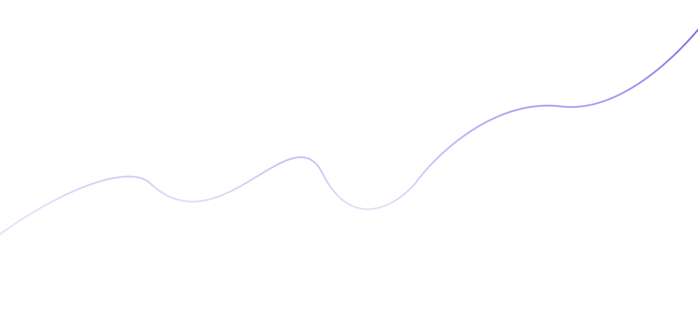
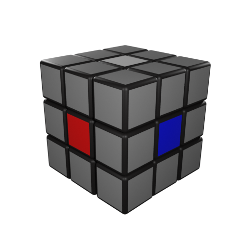
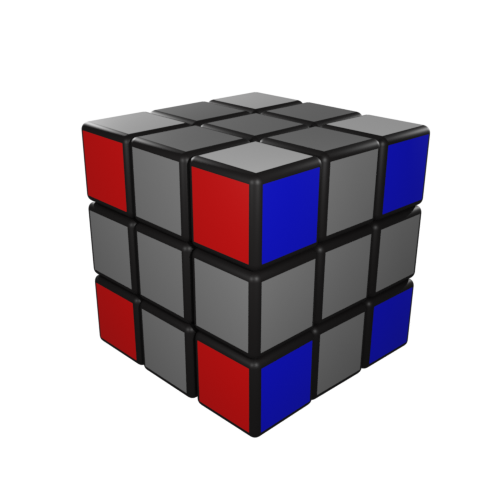
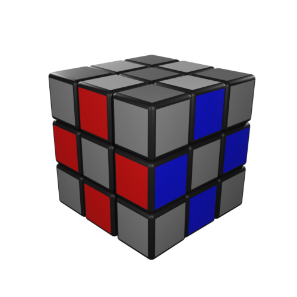

Научись собирать самую популярную головоломку в мире менее чем за минуту!

Устройство Кубика Рубика
Кубик Рубика - это головоломка, которая состоит из 27 маленьких кубиков одинакового размера, которые могут поворачиваться вокруг своей оси. Головоломка разделена на три группы кубиков - центры, ребра и углы.

Центры
Центры - это кубики, которые расположены в середине каждой грани кубика Рубика. Всего на кубике Рубика шесть центров, которые расположены на шести разных гранях. Центры имеют одинаковый цвет на каждой грани, и эти цвета определяют цвет грани кубика Рубика.

Углы
Углы - это кубики, которые расположены в углах кубика Рубика. Всего на кубике Рубика восемь углов, и они имеют три цвета на себе - цвет трех граней, которые соединяются в углу. Углы могут поворачиваться вокруг своих осей, которые проходят через центры кубика Рубика.

Ребра
Ребра - это кубики, которые находятся на границе между двумя гранями кубика Рубика. Всего на кубике Рубика двенадцать ребер, и они имеют два цвета на себе - цвет одной грани и цвет соседней грани. Ребра могут поворачиваться вокруг оси, которая проходит через центры кубика Рубика.
У кубика Рубика 6 сторон и, соответственно, 6 разных цветов. На собранном кубике Рубика цвета расположены всегда одинаковым образом относительно друг друга.
В классической расцветке белый всегда напротив желтого, синий напротив зеленого, а красный напротив оранжевого.
Язык вращений
R - правая сторона
L - левая сторона
U - верхняя сторона
D - нижняя сторона
F - лицевая сторона
B - задняя сторона
R
Просто буква означает, что нужно крутить сторону по часовой стрелке, как если бы мы смотрели на грань в лицо.
R’
Если после буквы стоит штрих, нужно крутить сторону против часовой стрелки, как если бы мы смотрели на грань в лицо.
R2
Если после буквы стоит 2, нужно крутить эту сторону на 180 градусов.